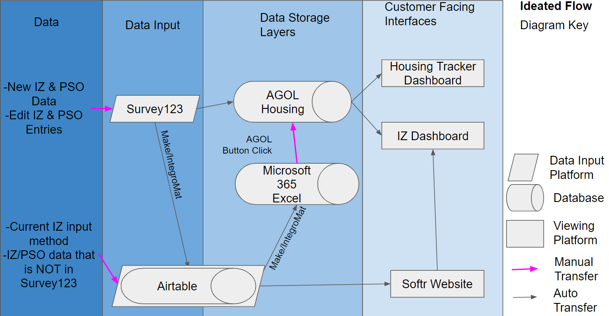
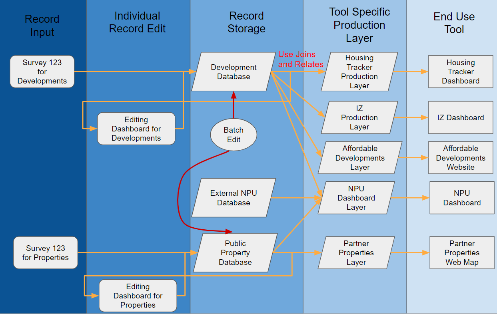

Welcome to my page! I've spent some time documenting my work, my interests, and random things about myself here. I hope you find what your looking for. Please do look around!
City of Atlanta Office of Housing and Community Development Data Management
TLDR: The City of Atlanta did not have a good solution for storing and allowing edits to their housing program records. Using ArcGIS Online, I proposed a better method for storage and revision.
Topics
Data Management, Housing Data, AGOL, Airtable, Excel, Integrations
Project Motivation
The Office of Housing and Community Development within the City of Atlanta Department of City Planning was having difficultly tracking housing program data and development progress. The starting state of the data storage was essentially many different versions of online spreadsheets and GIS layers. They were started to have issues not being able to let many people make edits in a short period of time, errors inputting data, versions falling out of sync, and not being able to share the information in a timely manner with stakeholders in an appropriate format. I hopped into this project, because it really bothered me that these issues kept happening and there was not a solution on the horizon. Below shows an example of the various different platforms and information transfers that had to be made between ESRI platforms and Microsoft, Airtable, and Softr platforms in the existing way they operated. The ideal solution for this would be to implement a legitimate database system, but the office did not have the resources nor the staff expertise to properly run, maintain, and access such technologies. So, I proposed a quasi-database system of sorts on AGOL where our data storage units would be AGOL Layers.

The proposed system I designed for a next step to impliment keeping in mind the technology limitations of the office staff was as follows.

This was designed three big points in mind. 1. Redudant Data should be eliminated. Redudant data causes many issues such as slowing down sync times, increasing storage cost, increasing data accuracy errors, and increasing time spend manually updating any data. 2. Large data sizes due to redudant data means slower data processing for any data search or operation. 3. When batch updating, there are longer down times and higher risks of compromising the datasets. So this new data storage and flow system create more production and editing layers essentially while reducing the number of platforms store the same information on. The new edits include 1.Everything gets moved to ESRI platforms 2. Separate data layers exist for record storage and production output products. 3. Separate property development data from public property databases as there is not a innate relationship between the two.

I wanted to thank you... for your leadership and dedication to this project... You really shaped this project and implemented a vision for it... I really trusted your work. You elevated this project beyond what would have been possible had we not had you on board.
— City of Atlanta Department of City Planning Supervisor

You did a great job... from coming up to speed quickly on how to best work with our team to completing all tasks efficiently and with a high quality of work. For every task given, especially larger ones, you were good at taking ownership of the project with minimal direction needed.
— East West Manufacturing Supervisor

I am very pleased with your performance, team spirit, self-starter mentality, and leadership. I am very pleased... with your ability to move a project from concept to reality... you have helped get us... strong infrastructure, technical capability, programming
— Center for Sustainable Communities Supervisor